How to Print in the Microsoft Whiteboard App (Windows 11)
This tutorial covers:
How to Print in Whiteboard:
How to Close the Print Window:
How to Specify Pages:
How to Print on Both Sides:
How to Add a Printer:
How to Change the Printer:
How to Let Whiteboard Change Printing Preferences
No time to scroll down? Click through this tutorial presentation:
Follow along with a tutorial video:
How to Print With Print Window
- Step 1: First open a whiteboard. On the keyboard press Ctrl + P. 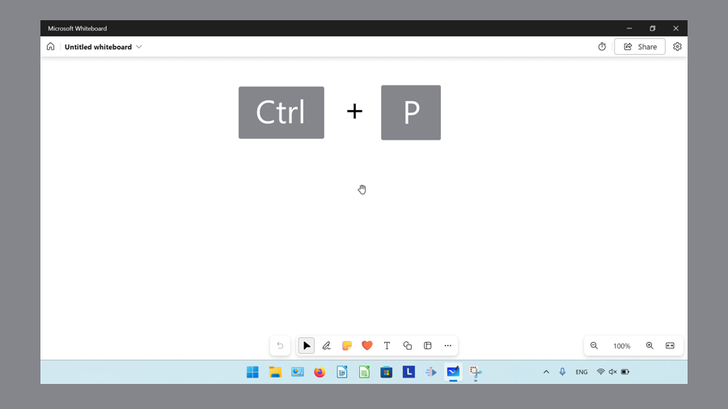
- Step 2: In the Print window that opens, lick the “Print” button. 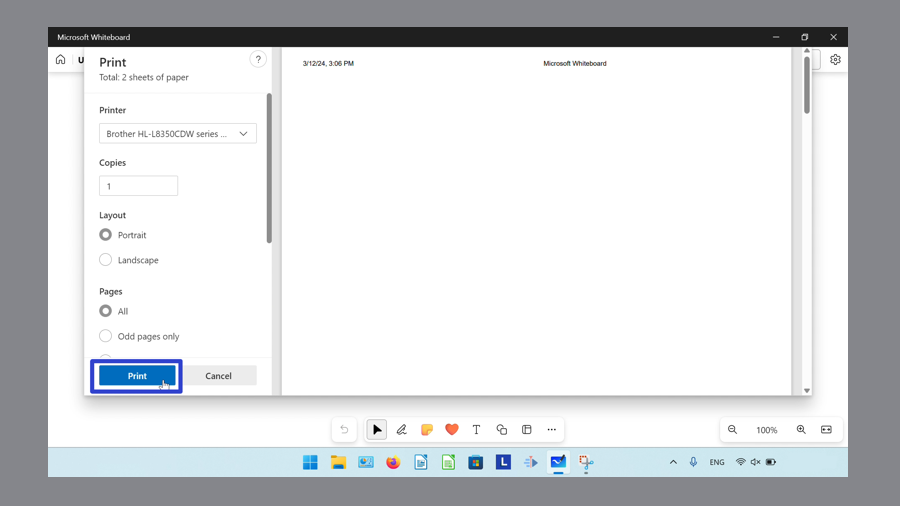
How to Print With System Dialog
- Step 1: Open a whiteboard. On the keyboard press Ctrl + Shift + P. 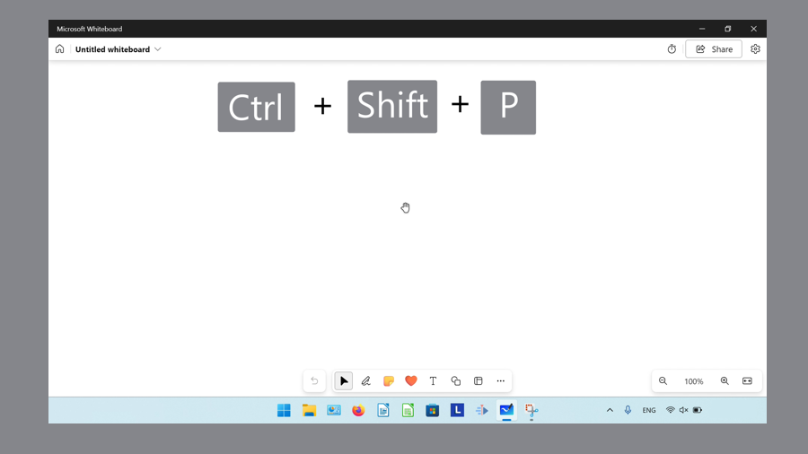
- Step 2: In the System Dialog window that opens, click the “Print” button. 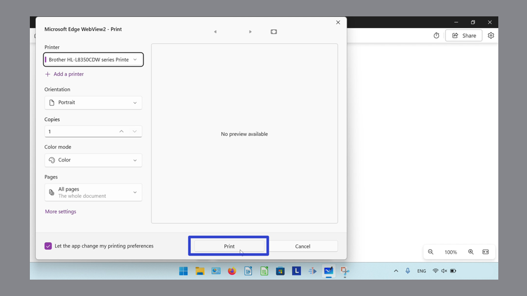
- Alternatively, in a whiteboard press Ctrl +P, and in the Print window that opens, click “Print using system dialog” to open the System Dialog window. 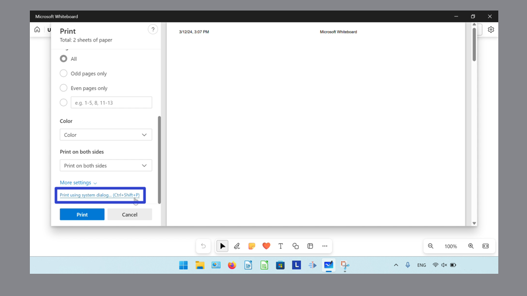
How to Close the Print Window With Click
- Step 1: First open the Print window or the System Dialog window. Click the “Cancel” button. 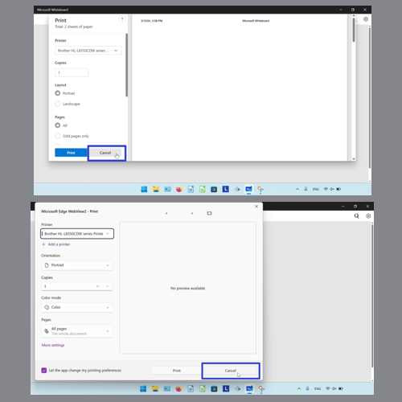
How to Close the Print Window With Keyboard Shortcut
- Step 1: Open the Print window or the System Dialog window. On the keyboard press Esc. 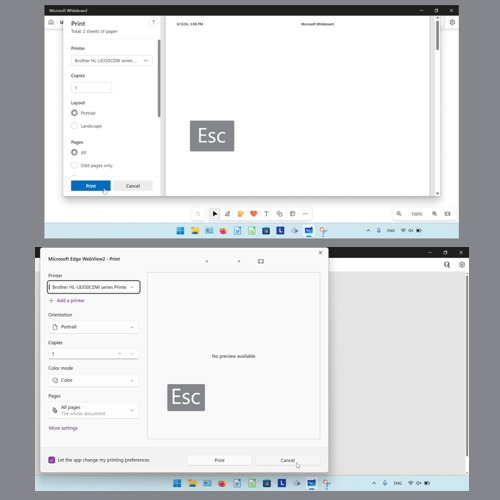
How to Close the Print Window With Close
- Step 1: First open the System Dialog. In the upper right click the “Close” or “X” button. 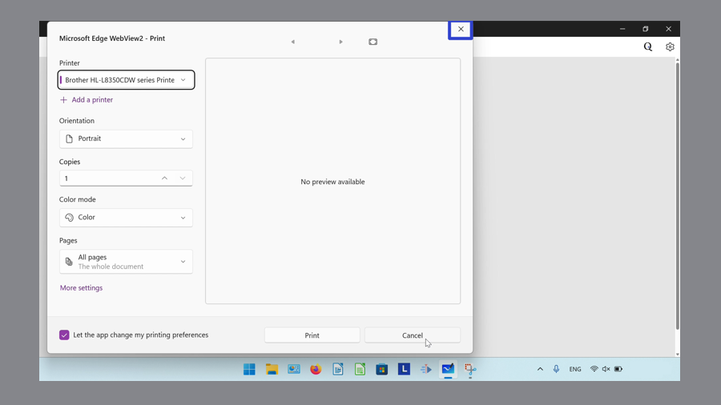
How to Specify Pages With the Print Window
- Step 1: Open the Print window. Under the “Pages” section, click to select “All”, “Odd pages only”, or “Even pages only”. Specify page numbers by clicking the last option and typing the page numbers. 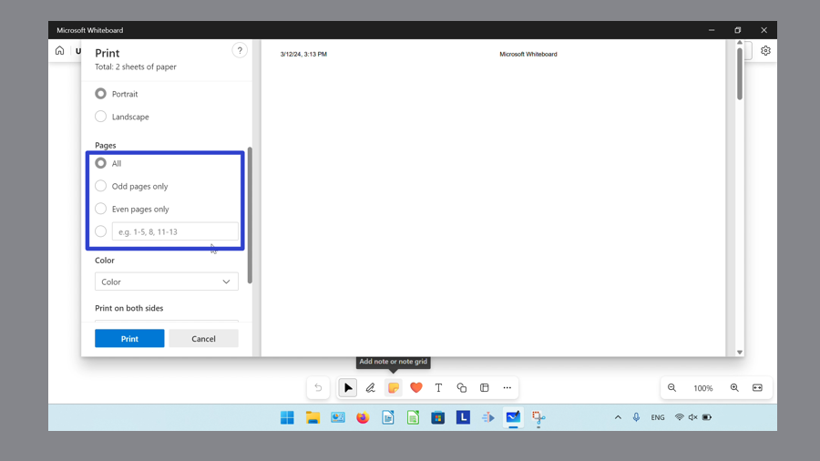
How to Specify Pages With System Dialog
- Step 1: First open the System Dialog window. Click the “Pages” drop-down menu, select “Custom range”, and in the “Page range” field that opens, type the page numbers. 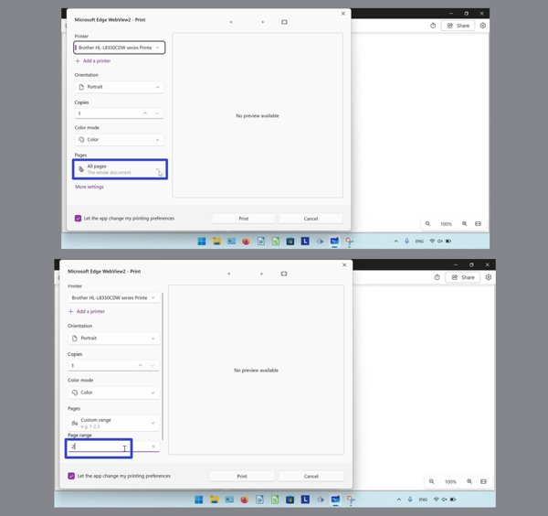
How to Print on Both Sides With the Print Window
- Step 1: First open the Print window. Scroll down and click the “Print on both sides” drop-down menu to select “Print on one side”, “Print on both sides flip on long edge”, or “Print on both sides flip on short edge”. 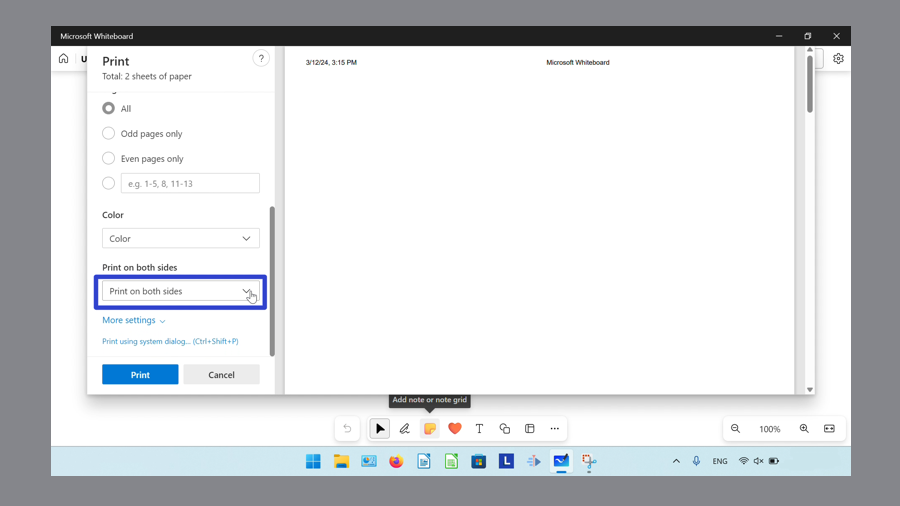
How to Print on Both Sides With Printing Preferences
- Step 1: Open the System Dialog window. On the lower left side, click “More settings”.

- Step 2: In the Printing Preferences window that opens, click the “Print on both sides” drop-down menu. Select “None”, “Flip on short edge”, or “Flip on long edge” and then click the “OK” button. 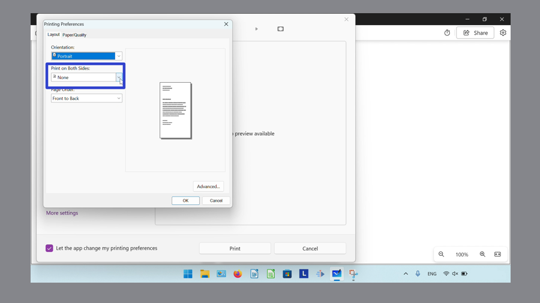
How to Add a Printer With Print Window
- Step 1: First open the Print window. Click the “Printer” drop-down menu, scroll down, and click “Add a printer”. 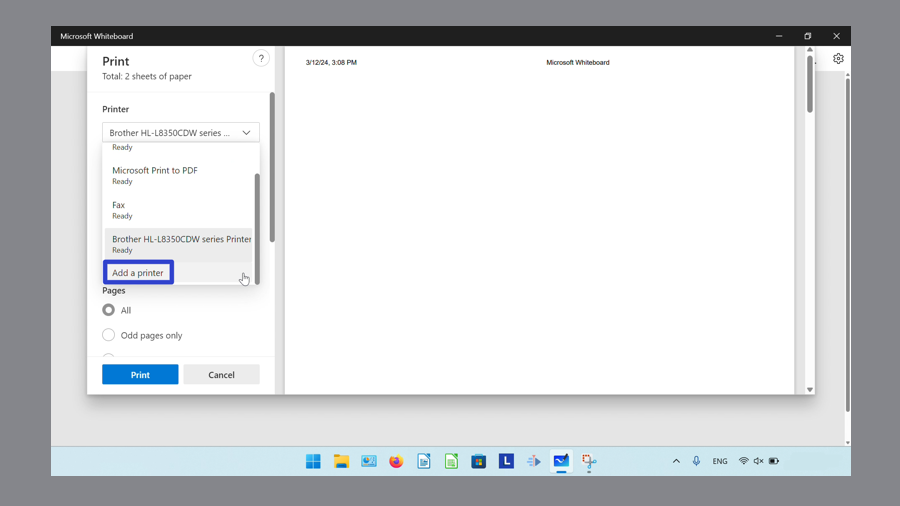
- Step 2: In the “Bluetooth & Devices” Settings window that opens, click “Add device”. The computer adds a printer through a Bluetooth connection. 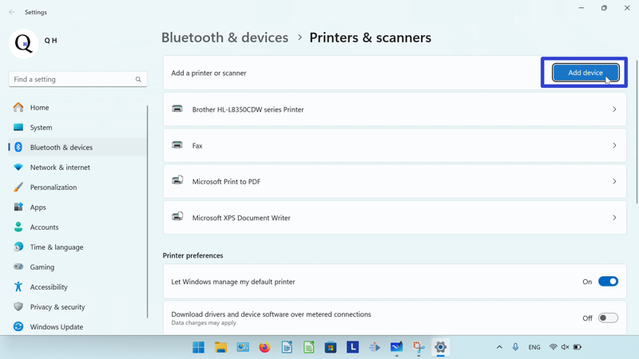
How to Add a Printer With System Dialog
- Step 1: Open the System Dialog window. Click the “+ Add a printer” option. 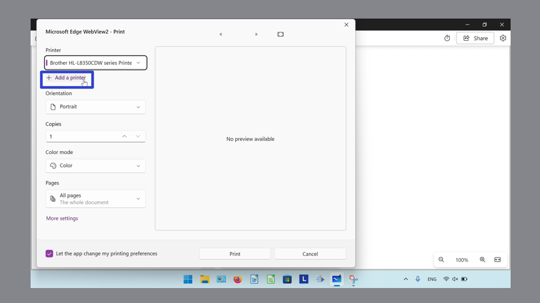
- Step 2: In the “Bluetooth & Devices” Settings window that opens, click “Add device”. The computer adds a printer through a Bluetooth connection.
How to Change the Printer With Print Window
- Step 1: First open the Print window. Click the “Printer” drop-down to select a printer. 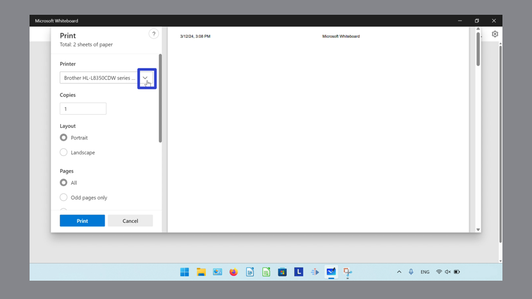
How to Change the Printer With System Dialog
- Step 1: Open the System Dialog window. Click the “Printer” drop-down menu to select a printer. 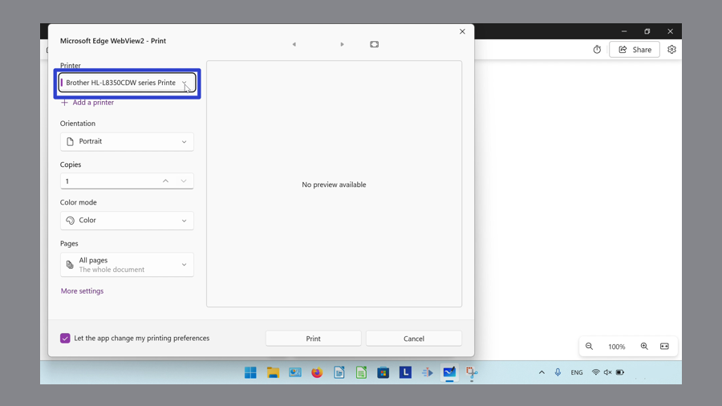
How to Let Whiteboard Change Printing Preferences
- Step 1: First open the System Dialog window. In the lower left, click to toggle the “Let the app change my printing preferences” option on or off.
Refer these instructions later with this free tutorial PDF.